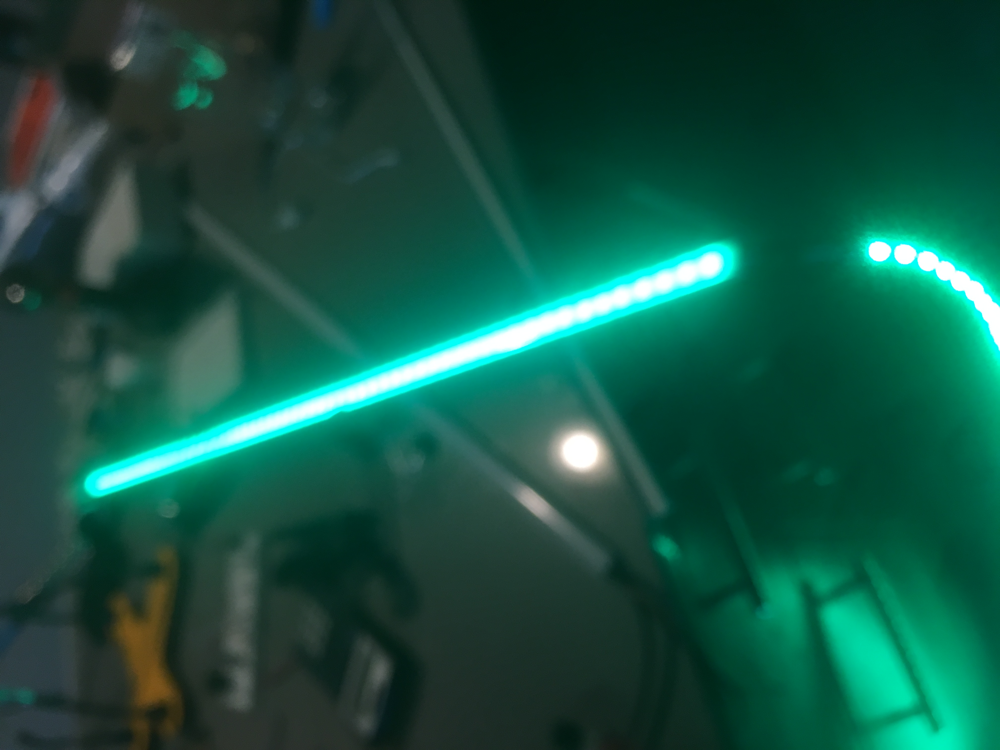

Final Project!
This page will document my progress as I create my final project for HCDE 439.
2/2 - I'm trying to get a MIDI input circuit working with a drum machine. 2/12 - I have moved my A4 to a solderable breadboard to create a first prototype for the final project. I have also ordered aluminum channels to put my WS2812b RGB LED strips into.

2/14 - Drum machine controlling LED strip. Enclosure arriving tomorrow to make nicer looking LED strips.
This video shows the LEDs responding to drum machine MIDI messages. Here, the LEDs are placed temporarily in the aluminum enclosures.
2/20 - These are the LED connectors I will be attaching to the ends of the cut strips to connect my 3 segments. They comprise of 3 wires (power, ground, and data), and a male or female 3-pin connector. My LED segments will each have a male and female connector, except the end segment will only have a female connector.
2/22 - I cut and soldered the LED strips to place in the enclosures. The WS2812b LED strip I'm using has 60 leds/meter, and the enclosures are 1 meter each. So, there are 60 LEDs on each of the strips I cut.

2/23 - These are the 3 strips I made. After cutting and soldering the LED strips, they were glued down into the enclosures. Then the plastic diffusing cover was place on top of the LEDs. The enclosure end caps, which were placed onto the LED strip connectors before they were soldered to the LEDs, were glued into place in the enclosures.

And this is what they look like lit up.

3/2 - This is an Arduino Mega with the CQRobot DMX Shield and the Spectrum Shield on top of it. The DMX Shield allows the control of standard stage lighting devices - DMX is the industry standard communication protocol. However, this shield generated weak DMX data that could not power more than 1 light, and I have 2 DMX lights (so far).

These are the DMX lights I am controlling with the Arduino - image from Amazon(https://www.amazon.com/Lixada-Lighting-Professional-Channels-100-240V/dp/B01DXK33FC)
3/5 - Luckily, I was able to get another DMX shield, from Tinkerkit, that solved the issue. This one didn't come with the DMX connectors attached - I soldered wires to a panel-mount connector, and the wires are screwed into screw terminals on the "OUT" side of the DMX shield.

3/6 - Finally, all the pieces are in the box. The mounted jacks are: DMX out jack (control spotlights), MIDI in (receive drum machine data), and DC power. Also coming out of holes in the enclosure are a USB cord connected to one of the Arduinos, 3 wires to control the LED strips, and a 1/8" audio cable connected to the spectrum shield. The spectrum shield is connected to one of the outputs of my audio interface, and analyzes the different frequencies of an audio signal. Currently, the low frequencies are used to control the brightness of the DMX lights.
After smushing some wires down, the box was finally able to be closed.
Here is a simple video of the project functioning. MIDI data from the drum machine/synthesizer, which is creating all the audio heard in the video, controls the LED lights. The DMX lights are programmed to move in time with the MIDI beat and their brightness is controlled by the level of the low audio frequencies.
3/13 - This is the schematic for the device at the current time.
3/13 - Final Performance Video. Cover of Tieduprightnow by Parcels.
This is the code of the MIDI input Arduino (Micro)
//This program is developed especially for use with the Novation Circuit Synthesizer
//Other MIDI controllers would require significant reconfiguration
//Libraries used in this project
#include MIDI.h
#include Wire.h
bool DEBUG = false;
//MIDI on serial port 1 (Arduino MEGA has multiple serial ports)
MIDI_CREATE_INSTANCE(HardwareSerial, Serial1, MIDI)
//is song playing?
boolean playing = false;
//keep track of midi beat timecode
int clock_signal_counter = 0;
int beats = 1; //start on beat 1
void setup()
{
//Inter arduino communication
Wire.begin(); // join i2c bus (address optional for master)
Wire.setClock(400000); //fast clock, happy LEDs
//MIDI on Serial 1, serial used for output monitoring
if (DEBUG) {
Serial.begin(250000);
while (!Serial);
Serial.println("Serial on - midi in micro");
}
//Declare MIDI Library callbacks
MIDI.setHandleClock(handleClock);
MIDI.setHandleStart(handleStart);
MIDI.setHandleStop(handleStop);
MIDI.setHandleControlChange(handleControlChange);
MIDI.setHandleNoteOn(handleNoteOn);
MIDI.setHandleNoteOff(handleNoteOff);
// Initiate MIDI communications, listen to all channels
MIDI.begin(MIDI_CHANNEL_OMNI);
}
void loop()
{
// Call MIDI.read the fastest you can for real-time performance.
MIDI.read();
}
//Unused - called every half beat
void halfbeat() {
}
//Using this for DMX Pan/Tilt tracking now
void beat(int b) {
byte bytes[] = {201, b};
wireTransmit(2, bytes);
}
void Synth1(int pitch, int velocity) {
if (DEBUG) Serial.println("Synth1 pitch: " + String(pitch));
/* Synth 1- Lowest octave. Key of C, First scale
First 4 notes - 7 8 10 12
*/
switch (pitch) {
/*
Lowest row
*/
case 0: { //Analog to Drum 1
wireTransmit(1);
break;
}
case 2: { //Analog to Drum 2
wireTransmit(2);
break;
}
case 3: { //Analog to Drum 3
wireTransmit(3);
break;
}
case 5: { //Analog to Drum 4
wireTransmit(4);
break;
}
//2nd Row Up (2nd Octave)
case 12: { //
wireTransmit(5);
break;
}
case 14: { //
wireTransmit(6);
break;
}
case 15: { //
wireTransmit(7);
break;
}
case 17: { //
wireTransmit(8);
break;
}
//3rd Row Up (3rd Octave)
case 24: { //
wireTransmit(9);
break;
}
case 26: { //
wireTransmit(10);
break;
}
case 27: { //
wireTransmit(11);
break;
}
case 29: { //
wireTransmit(12);
break;
}
//4th Row Up (4th Octave)
case 36: { //
wireTransmit(13);
break;
}
case 38: { //
wireTransmit(14);
break;
}
case 39: { //
wireTransmit(15);
break;
}
case 41: { //
wireTransmit(16);
break;
}
/*
case 17: { //Activate flash forward
wireTransmit(7);
break;
}
//3rd row up
case 29: { //Activate flash backward
wireTransmit(6);
break;
}
*/
}
}
//Unused
void Synth2(int pitch, int velocity) {
}
//Transmit drum messages to 2nd arduino
void Drums(int pitch, int velocity) {
/* pitch:
60 - Drum 1
62 - Drum 2
64 - Drum 3
65 - Drum 4
*/
switch (pitch) {
case 60: {
wireTransmit(1);
break;
}
case 62: {
wireTransmit(2);
break;
}
case 64: {
wireTransmit(3);
break;
}
case 65: {
wireTransmit(4);
break;
}
}
}
//Send a single byte to the other arduino
void wireTransmit(byte t) {
Wire.beginTransmission(1); // transmit to device #1
Wire.write(t); // sends given byte
int r = Wire.endTransmission(); // stop transmitting
if (DEBUG) Serial.println(" Transmitted " + String(t));
}
//Send an array of bytes to the other arduino
void wireTransmit(int numBytes, byte t[]) {
Wire.beginTransmission(1); // transmit to device #1
String transmission = "";
for (int i = 0; i < numBytes; i++) {
Wire.write(t[i]); // sends each byte in array
transmission += String(t[i]) + " ";
}
Wire.endTransmission(); // stop transmitting
if (DEBUG) Serial.println("Transmitted " + transmission); //debugging
}
// MIDI Callbacks - called when MIDI events are detected by MIDI.read() in the loop function
// -----------------------------------------------------------------------------
void handleNoteOn(byte channel, byte pitch, byte velocity)
{
//if(DEBUG) Serial.println("Note on channel: " +
// String(channel) + " pitch: " + String(pitch) + " velocity: " + String(velocity));
if (channel == 1) {
Synth1(pitch, velocity);
} else if (channel == 2) {
Synth2(pitch, velocity);
} else if (channel == 10) {
Drums(pitch, velocity);
}
// Do whatever you want when a note is pressed.
// Try to keep your callbacks short (no delays ect)
// otherwise it would slow down the loop() and have a bad impact
// on real-time performance.
}
void handleNoteOff(byte channel, byte pitch, byte velocity)
{
//if(DEBUG) Serial.println("Note off channel: " +
// String(channel) + " pitch: " + String(pitch) + " velocity: " +String(velocity));
// Do something when the note is released.
// Note that NoteOn messages with 0 velocity are interpreted as NoteOffs.
}
//void handleAfterTouchPoly(byte channel, byte note, byte pressure);
void handleControlChange(byte channel, byte number, byte value) {
if (value < 0 or value > 127) return;
if (DEBUG) Serial.println("CC channel: " +
String(channel) + " number: " + String(number) + " value: " + String(value));
//200 = Control change signifier
byte bytes[] = {200, number, value};
wireTransmit(3, bytes);
}
//Unused MIDI Callbacks - could be useful
/*
void handleProgramChange(byte channel, byte number);
void handleAfterTouchChannel(byte channel, byte pressure);
void handlePitchBend(byte channel, int bend);
void handleSystemExclusive(byte* array, unsigned size);
void handleTimeCodeQuarterFrame(byte data);
void handleSongPosition(unsigned int beats);
void handleSongSelect(byte songnumber);
void handleTuneRequest(void);
void handleActiveSensing(void);
void handleSystemReset(void);
void handleContinue(void);*/
void handleClock(void) {
if (playing) {
//if(DEBUG) Serial.println("Clock pulse");
clock_signal_counter ++;
if (clock_signal_counter == 12) {
halfbeat();
}
if (clock_signal_counter >= 24) {
clock_signal_counter = 0;
beats++;
//if(DEBUG) Serial.println("Beats: " + string(beats));
beat(beats);
}
}
}
void handleStart(void) {
playing = true;
if (DEBUG) Serial.println("MIDI Start");
beats = 1;
clock_signal_counter = 0;
beat(1);
}
void handleStop(void) {
beats = 1;
clock_signal_counter = 0;
playing = false;
if (DEBUG) Serial.println("MIDI Stop");
}
// -----------------------------------------------------------------------------
This is the code of the DMX/LED Control Arduino (Mega) - it's a long one. I have it divided into several tabs in my IDE.
//TAB 1 - Intro
//Libraries used in this project
#include FastLED.h
#include Wire.h
#include DmxSimple.h
/*
* DMX
*/
//Channels
#define RED_CH 7 // Lixada DMX-512 Stage Lighting Mini Moving Head - Red channel
#define BLUE_CH 9 // Lixada DMX-512 Stage Lighting Mini Moving Head - Blue channel
#define GREEN_CH 8 // Lixada DMX-512 Stage Lighting Mini Moving Head - Green channel
#define BRIGHTNESS_CH 6 // Lixada DMX-512 Stage Lighting Mini Moving Head - Master brightness channel
#define DMX_PIN 3 //3 for tinkerkit (good), 4 for cqrobot shield (bad)
int dmx_brightness = 100; //Starting brightness
const int dmxPanStart = 170, dmxTiltStart = 146; //Initial positioning
//Pan and Tilt represent current values, G represents goal/target values
int dmxPan = dmxPanStart, dmxTilt = dmxTiltStart;
int dmxPanG = dmxPanStart, dmxTiltG = dmxTiltStart;
int panTimer = 0, tiltTimer = 0; //Timers to control DMX movement
int dmxMoveSpeed = 5; //Number of loop cycles between DMX movements
/*
* Spectrum
*/
#define STROBE 9 //Used to get next value from spectrum shield
#define RESET 10 //Used to start up the spectrum shield
#define DC_One A0 //Read left spectrum values - analog in
#define DC_Two A1 //Read right spectrum values - analog in
int Frequencies_One[7]; //Stores frequency values from left audio channel
int Frequencies_Two[7]; //Stores frequency values from right audio channel
/*
* LED
*/
#define NUM_LEDS 180 // 3 strips @ 60 LEDs / strip
#define STRIP1 leds(0,59) //Define zones to make lighting up sections easier
#define STRIP2 leds(60,119)
#define STRIP3 leds(120,179)
#define LED_DATA_PIN 13 //Pin to communicate data to LEDs
CRGBArray leds; // Array of leds
/*
* Other
*/
//Track the beats coming from Novation Circuit
int beat = 0;
//Attempt to track tempo from beat - default 120 (common tempo)
int tempo = 120;
//Flashes
#define NUM_FLASHES 10 //Maximum number of flashes simultaneously displayed
#define FLASH_SPEED 1 //Increase to slow flashes - 1 is max speed
//These HSV colors are controlled by knobs on the drum machine
CHSV midi_colors[] = {CHSV(128, 255, 255), CHSV(192, 255, 255), CHSV(160, 255, 255), CHSV(120, 255, 255)};
CRGB dmxColor; //Color of the Lixada DMX Light
//Modes to display all colors, and continuous rainbow. Knob controlled.
boolean colorChangeMode = 0, rainbowMode = 0;
//TAB 2 - Flash Class
/*
FLASH CLASS
*/
class flash {
private:
int pos;
int flashLength;
bool active;
bool forward;
bool plainColor;
int flash_rainbow_color;
int waitTime;
CHSV flash_plain_color;
public:
flash();
void draw();
void activate(int forward);
void activate(int forward, CHSV cIn);
bool isActive();
};
flash::flash()
{
this->waitTime = 0;
this->active = false;
this->flashLength = 5;
}
bool flash::isActive()
{
return this->active;
}
void flash::activate(int forward)
{
this->active = true;
this->pos = 0;
this->flash_rainbow_color = random(100);
this->forward = forward;
this->plainColor = false;
}
void flash::activate(int forward, CHSV cIn)
{
this->active = true;
this->pos = 0;
this->flash_plain_color = cIn;
this->forward = forward;
this->plainColor = true;
}
void flash::draw() {
if (!this->plainColor) {
if (forward) leds(max(this->pos - this->flashLength, 0), min(this->pos, NUM_LEDS)).fill_rainbow(this->flash_rainbow_color++);
else leds(NUM_LEDS - max(this->pos - this->flashLength, 0), NUM_LEDS - min(this->pos, NUM_LEDS)).fill_rainbow(this->flash_rainbow_color++);
} else {
if (forward) leds(max(this->pos - this->flashLength, 0), min(this->pos, NUM_LEDS)) = this->flash_plain_color;
else leds(NUM_LEDS - max(this->pos - this->flashLength, 0), NUM_LEDS - min(this->pos, NUM_LEDS)) = this->flash_plain_color;
}
this->waitTime--;
if (this->waitTime <= 0) {
this->pos++;
this->waitTime = FLASH_SPEED;
}
if (this->pos - this->flashLength > NUM_LEDS) {
this->active = false;
}
}
/*
END FLASH CLASS
*/
flash flashes[NUM_FLASHES];
//Activates the next flash
void activateNextFlash(int forward) {
for (int i = 0; i < NUM_FLASHES; i++) {
if (!flashes[i].isActive()) {
Serial.println("Activated: " + String(i));
flashes[i].activate(forward);
break;
}
}
}
//Activates the next flash with a defined color
void activateNextFlash(int forward, CHSV cIn) {
for (int i = 0; i < NUM_FLASHES; i++) {
if (!flashes[i].isActive()) {
Serial.println("Activated: " + String(i));
flashes[i].activate(forward, cIn);
break;
}
}
}
//TAB 3 - Setup
void setup()
{
//DMX Simple
/* The most common pin for DMX output is pin 3, which DmxSimple
** uses by default. If you need to change that, do it here. */
pinMode(2, OUTPUT); //Initialize DMX Shield
digitalWrite(2, HIGH); //Initialize DMX Shield
DmxSimple.usePin(DMX_PIN); //Send DMX data to correct pin
DmxSimple.maxChannel(32); //Absolute max is 512. Using fewer makes program faster.
DmxSimple.write(BRIGHTNESS_CH, dmx_brightness); //Initialize brightness
Serial.begin(250000); //Serial for debugging
while (!Serial); //Wait for serial to start
Serial.println("Serial on - led/dmx controller"); //Check that serial is working
//WIRE - This arduino receives wire messages from the MIDI arduino thru the SCL/SDA pins
Wire.begin(1); // join i2c bus with address #1
Wire.setClock(400000); //Fast clock for fast communication
Wire.onReceive(receiveEvent); //What to do on receipt of wire message
FastLED.addLeds(leds, NUM_LEDS).setCorrection(TypicalLEDStrip); //Create LED array
FastLED.setBrightness(50); //Initial LED brightness
//Spectrum
pinMode(STROBE, OUTPUT);
pinMode(RESET, OUTPUT);
pinMode(DC_One, INPUT);
pinMode(DC_Two, INPUT);
digitalWrite(STROBE, HIGH);
digitalWrite(RESET, HIGH);
//Initialize Spectrum Analyzers
digitalWrite(STROBE, LOW);
delay(1);
digitalWrite(RESET, HIGH);
delay(1);
digitalWrite(STROBE, HIGH);
delay(1);
digitalWrite(STROBE, LOW);
delay(1);
digitalWrite(RESET, LOW);
}
//TAB 4 - Loop
void loop()
{
Read_Frequencies();
//CRGB newDmxColor;
//hsv2rgb_rainbow(midi_colors[0], newDmxColor);
//newDmxColor = leds[65];
//eolor(newDmxColor);
//ctrl dmx brightness
setDMXColor(midi_colors[1]);
//dmxColor = midi_colors[1];
//134 is max brightness // lowering to 100 temporarily
int specVal = map(Frequencies_One[0]+Frequencies_Two[0]+Frequencies_One[1]+Frequencies_Two[1], 0, 1023*4, -10, 100);//134);
specVal = constrain(specVal * 1.5, 0, 134);
//dmx_brightness += specVal-dmx_brightness)/10;
int changeVal = (specVal-dmx_brightness)/10;
if(changeVal == -1 || changeVal == 0 || changeVal == 1) {
}else{
//Serial.println("ChangeVal: " + String(changeVal));
if(changeVal < 0) changeVal /= 2;
dmx_brightness += changeVal;
}
DmxSimple.write(6, dmx_brightness);
dmxShow();
//Display flashes
for (int j = 0; j < NUM_FLASHES; j++) {
if (flashes[j].isActive()) {
flashes[j].draw();
}
}
//Show LEDs at their programmed colors
FastLED.show();
if (rainbowMode) { //rainbow if in rainbow mode (synth1 knob 5)
rainbow_all();
} else if (colorChangeMode) { //Show all LEDs if filter == 127
STRIP1 = midi_colors[1];
STRIP2 = midi_colors[0];
STRIP3 = midi_colors[2];
//Otherwise, fade all LEDs
}
//else
fadeAll(245);
}
//TAB 5 - Wire Functions
void receiveEvent(int h) {
//Get first byte of wire message
byte type = Wire.read();
//print first byte
Serial.println("Received type: " + String(type));
/*Perform different actions for different values of the first byte
Some values are an entire message. Some, like value 200 for a Control Change (CC) message,
indicate that there are more bytes in the message. This simple single-byte communication
is generated by the MIDI arduino according to the incoming MIDI messages. Wire only communicates
in single bytes of value 0-255, so MIDI messages had to be stripped down to only what was needed
before being sent to this Arduino.
*/
switch (type) {
//Light up LEFT leds on midi timecode beat - not used anymore
/*
case 0: { //MIDI Beat
Serial.println("Midi beat");
//STRIP1 = CRGB(255, 0, 0);
}*/
//DRUM BEATS / first row synths
case 1: { //Drum 1 Lights up central/top bar
STRIP2 = midi_colors[0];
break;
}
case 2: { //Drum 2 lights up the right bar of LEDs
STRIP1 = midi_colors[1];
break;
}
case 3: { //Drum 3 lights left bar of LEDs
STRIP3 = midi_colors[2];
break;
}
case 4: { //Drum 4 makes all 3 bars light up in a rainbow pattern
rainbow_all();
break;
}
//2nd Row of synth 1 - flashes forward in drum colors
case 5: { //Drum 1 color flash forward
activateNextFlash(1, midi_colors[0]);
break;
}
case 6: { //Drum 2 color flash forward
activateNextFlash(1, midi_colors[1]);
break;
}
case 7: { //Drum 3 color flash forward
activateNextFlash(1, midi_colors[2]);
break;
}
case 8: { //Drum 4 (rainbow) color flash forward
activateNextFlash(1);
break;
}
//3rd Row of synth 1 - flashes backward in drum colors
case 9: { //Drum 1 color flash backward
activateNextFlash(0, midi_colors[0]);
break;
}
case 10: { //Drum 2 color flash backward
activateNextFlash(0, midi_colors[1]);
break;
}
case 11: { //Drum 3 color flash backward
activateNextFlash(0, midi_colors[2]);
break;
}
case 12: { //Drum 4 (rainbow) color flash backward
activateNextFlash(0);
break;
}
//DRUM BEATS / first row synths
case 13: { //Drum 1 Lights up central/top bar
leds(0,NUM_LEDS) = midi_colors[0];
break;
}
case 14: { //Drum 2 lights up the right bar of LEDs
leds(0,NUM_LEDS) = midi_colors[1];
break;
}
case 15: { //Drum 3 lights left bar of LEDs
leds(0,NUM_LEDS) = midi_colors[2];
break;
}
case 16: { //Drum 4 makes all 3 bars light up in a rainbow pattern
rainbow_all();
break;
}
//Control Change
//Control change messages consist of 3 bytes
//the first is 200 which signifies that the message is a CC
//the following 2 bytes communicate which knob and which value are sent
case 200: {
int number = Wire.read();
int value = Wire.read();
controlChange(number, value);
break;
}
case 201: { //MIDI beat indicator
beat = Wire.read();
if (beat == 1) { //On beat 1 reset DMX pan and tilt to initial values
dmxPan = dmxPanStart;
dmxPanG = dmxPanStart;
dmxTilt = dmxTiltStart;
dmxTiltG = dmxTiltStart;
} else if (beat == 5) {
dmxPanG -= 15;
//dmxTiltG -= 15;
} else if (beat % 8 == 5) {
dmxPanG += 30;
dmxTiltG += 30;
} else if (beat % 8 == 1) {
dmxPanG -= 30;
dmxTiltG -= 30;
}
Serial.println("beat " + String(beat));
break;
}
}
}
void controlChange(int number, int value) {
Serial.println("CC: " + String(number) + " " + String(value));
switch (number) {
case 87: { // Synth 1 knob 8 - brightness
int constrainedVal = constrain(value, 10, 120);
//Cap brightness at 200 for power consumption and color consistency
int bValue = map(constrainedVal, 10, 120, 0, 200);
dmx_brightness = map(constrainedVal, 10, 120, 8, 134);
Serial.println("DMX Bright: " + String(dmx_brightness));
FastLED.setBrightness(bValue);
Serial.println("Bright: " + String(bValue));
break;
}
case 80: { // Synth 1 knob 1 - c1
int cValue = constrain(value, 0, 127) * 2;
midi_colors[0] = CHSV(cValue, 255, 255);
Serial.println("midi_color_0: " + String(cValue));
break;
}
case 82: {// Synth 1 knob 3 - c2
int cValue = constrain(value, 0, 127) * 2;
midi_colors[1] = CHSV(cValue, 255, 255);
Serial.println("midi_color_1: " + String(cValue));
break;
}
case 84: {// Synth 1 knob 5 - c3
int cValue = constrain(value, 0, 127) * 2;
midi_colors[2] = CHSV(cValue, 255, 255);
Serial.println("midi_color_2: " + String(cValue));
break;
}
case 86: {//Synth 1 Knob 7 - color4
int cValue = constrain(value, 0, 127) * 2;
midi_colors[3] = CHSV(cValue, 255, 255);
Serial.println("midi_color_3: " + String(cValue));
break;
}
case 74: { //Filter knob for color set - light up all LEDs if filter == 127 (max value)
colorChangeMode = value == 127;
break;
}
case 81: {//Synth 1 knob 2 - pulse rainbow
rainbowMode = value == 127;
break;
}
/* case 85: {//Synth 1 knob 6 - DMX Tilt
int tiltVal = constrain(value * 2, 0, 255);
Serial.println("DMX Tilt: " + String(tiltVal));
dmxTiltG = tiltVal;
//DmxSimple.write(3, tiltVal);
break;
}
case 83: {//Synth 1 knob 4 - DMX Pan
int panVal = constrain(value * 2, 0, 255);
Serial.println("DMX Pan: " + String(panVal));
dmxPanG = panVal;
//DmxSimple.write(1, panVal);
break;
}*/
}
}
//TAB 6 - Miscellaneous
//Display a moving rainbow pattern on all LEDs
void rainbow_all() {
static int rainbowColor = 0;
leds(0, NUM_LEDS).fill_rainbow(rainbowColor++);
rainbowColor = rainbowColor % 255;
}
//Unused - turn off all LEDs
void allOff() {
for (int i = 0; i < NUM_LEDS; i++) {
leds[i] = CRGB(0, 0, 0);
}
}
//Fade all LEDs by a given value 0=no fade, 255=immediate fade
void fadeAll(int fade) {
//Serial.print(fade);
for (int i = 0; i < NUM_LEDS; i++) {
leds[i].nscale8(fade);
}
}
void dmxShow() {
DmxSimple.write(RED_CH, dmxColor.red);
DmxSimple.write(GREEN_CH, dmxColor.green);
DmxSimple.write(BLUE_CH, dmxColor.blue);
if (dmxTilt != dmxTiltG) {
if (tiltTimer <= 0) {
int tiltChange = 0;
if (dmxTilt < dmxTiltG) tiltChange = 1;
if (dmxTilt > dmxTiltG) tiltChange = -1;
dmxTilt += tiltChange;
tiltTimer = dmxMoveSpeed;
} else {
tiltTimer--;
}
} else {
tiltTimer = 0;
}
if (dmxPan != dmxPanG) {
if (panTimer <= 0) {
int panChange = 0;
if (dmxPan < dmxPanG) panChange = 1;
if (dmxPan > dmxPanG) panChange = -1;
dmxPan += panChange;
panTimer = dmxMoveSpeed;
} else {
panTimer--;
}
} else {
panTimer = 0;
}
//Channel 3 - Tilt
//Channel 1 - Pan
DmxSimple.write(3, dmxTilt);
DmxSimple.write(1, dmxPan);
}
//Change the color of the DMX spotlights
void setDMXColor(CHSV c) {
//Serial.println("DMXColor: " + String(c));
dmxColor = c;
}
//Spectrum shield - get 7 band frequences from stereo (dual mono) MSGEQ7 chips
void Read_Frequencies() {
//Read frequencies for each band
for (int i = 0; i < 7; i++)
{
Frequencies_One[i] = analogRead(DC_One);
Frequencies_Two[i] = analogRead(DC_Two);
digitalWrite(STROBE, HIGH);
digitalWrite(STROBE, LOW);
}
}